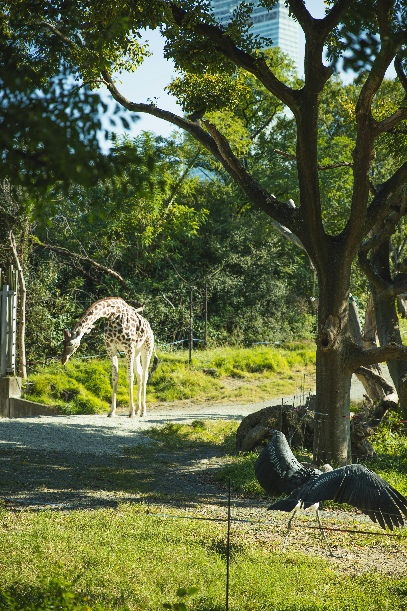

La Savane
La savane du Zoo Arcadia est une vaste étendue qui reproduit fidèlement l'environnement naturel des grands mammifères africains. Avec ses herbes hautes, ses acacias épars et son point d'eau central, cet habitat offre un espace de vie idéal pour nos animaux emblématiques de la savane.
Nos animaux de la savane